Uma janela só: a faixa da esquerda com o nome, a versão e os dois módulos, e Configurações no pé dela; o painel da direita mostra o módulo escolhido. No primeiro uso ela abre maximizada; depois, do tamanho em que foi fechada, sempre no meio da tela principal.
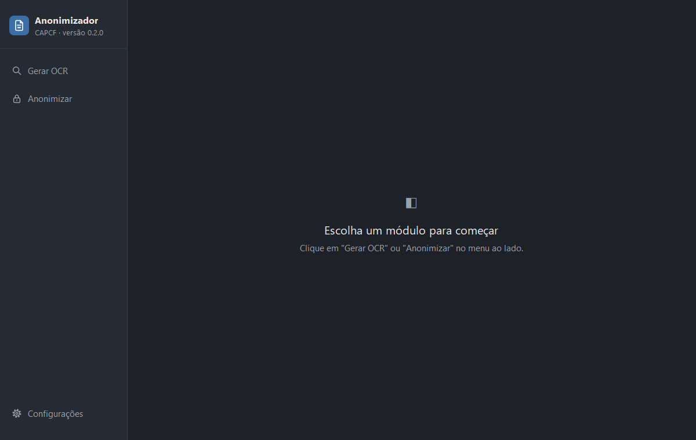
Transforma um PDF em texto conferido. É o módulo de quem só quer o texto: ele não procura nem mascara CPF, e o aviso da tela de salvar diz que o arquivo sai com os CPFs inteiros. Para mascarar, o caminho é o botão "Seguir para Anonimizar", que leva o texto conferido para lá sem gravar nada.
Arrastando, ou pelo botão. O programa abre o documento sem nunca alterá-lo, conta as páginas e descobre se há camada de texto.
Com camada de texto, ele mostra as primeiras linhas, e a pessoa escolhe entre aproveitá-las e mandar ler as imagens: o programa não julga se o texto presta. Sem camada, cada página vai ser lida como imagem.
O PaddleOCR vem marcado, e o motor escolhido é lembrado de um uso para o outro, um por módulo. A leitura corre ao lado da janela, com o andamento e o botão de cancelar. Antes de ler, o detector de orientação do Tesseract endireita a página deitada, para os dois motores.
O original de um lado e o texto lido do outro, página por página. O texto se corrige aqui, e em nenhum outro lugar.
Grava o texto conferido num arquivo, ou segue para o Anonimizar.
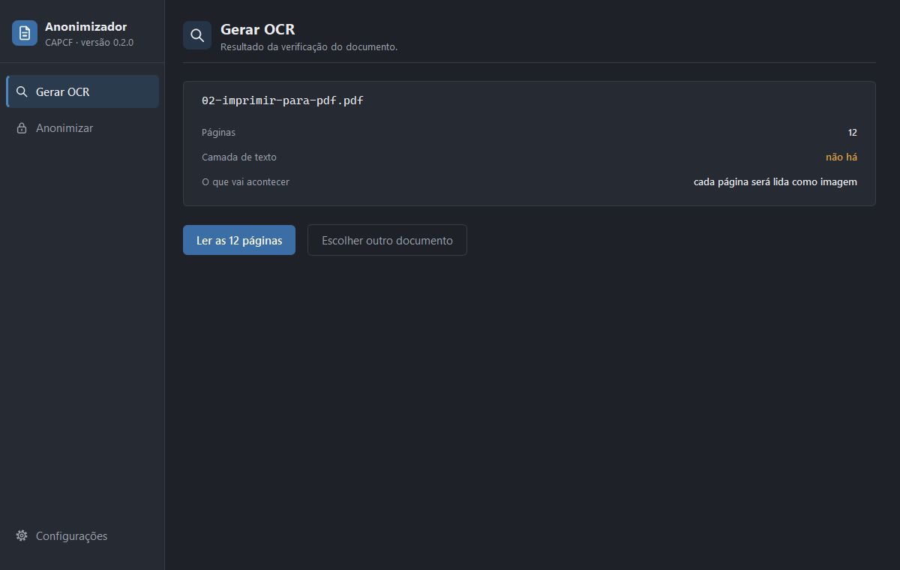
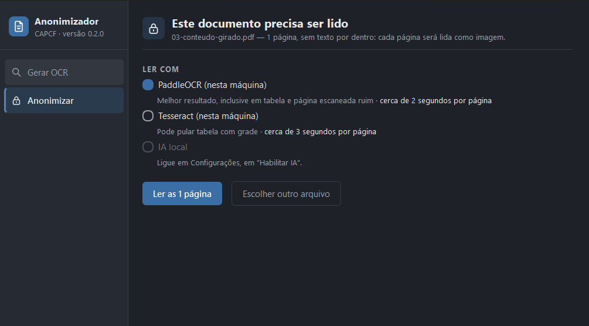
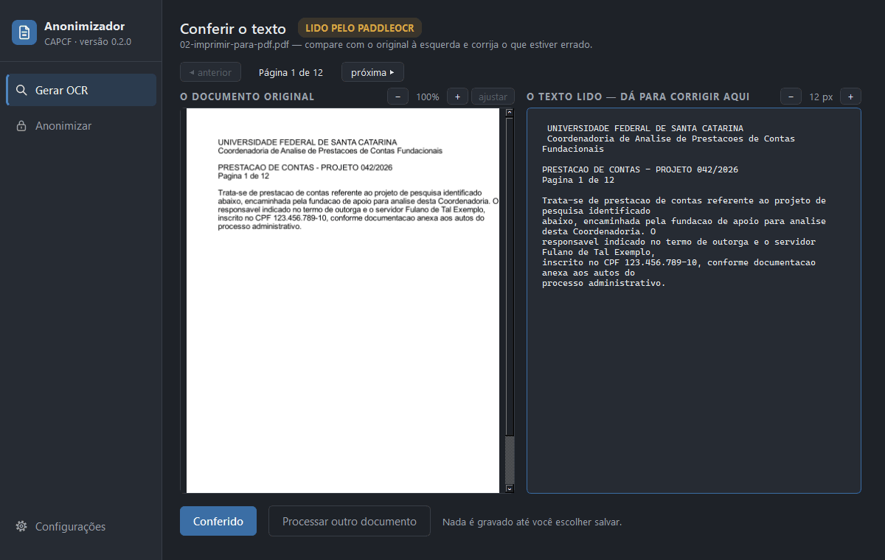
O módulo que dá razão ao programa. Recebe PDF, Word,
.md ou .txt, acha os CPFs, mascara e mostra tudo numa
revisão antes de salvar. O PDF passa pelo mesmo caminho do Gerar OCR,
conferência inclusive, e da conferência vai direto para a revisão.
A revisão aparece sempre, com CPF ou sem. O texto não se edita: só se mascara e se desfaz a máscara. Cada número achado tem a marca do tipo dele, e a lista ao lado traz os suspeitos primeiro, porque são eles que pedem o olho da pessoa.
A pessoa marca o trecho com o mouse e manda mascarar. O programa esconde as 3 primeiras e as 2 últimas posições do trecho.
Desfazer a máscara de um suspeito é um clique. De um número que passa na conta, pede a dupla conferência. Ao salvar, o programa mostra os que passam na conta e foram liberados, antes de gravar.
O caminho vem preenchido — a pasta do original, com o nome dele mais - sem CPF.md — e o arquivo tem o texto e mais nada.
| Na tela | Quer dizer |
|---|---|
| XXX sublinhado reto, vermelho | CPF válido: passa na conta. Liberar pede a dupla conferência. |
| XXX ondulado, âmbar | Suspeito: falha na conta, ou é quase CPF. |
| XXX pontilhado, azul | Mascarado à mão. |
| XXX tracejado, lilás | Apontado pela revisão por IA. |
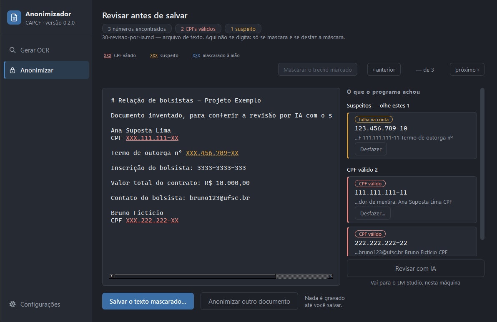
Vai o documento impresso inteiro — cabeçalho, corpo, tabelas, listas,
rodapé e notas —, com as alterações controladas aceitas, como o documento
ficaria no fim. Uma faixa na revisão diz o que ficou de fora: comentários,
texto oculto e imagens, que o programa não lê. Sai só o .md: o
programa não devolve o próprio Word mascarado.
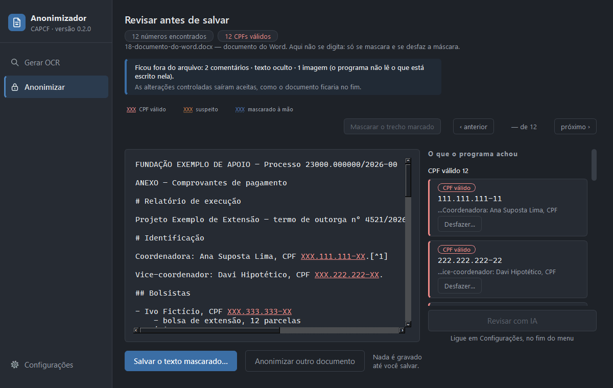
O último item da faixa. Ao entrar, a faixa vira o submenu: o Tema, em Configurações Gerais; e LM Studio, Servidor de IA Interno e Habilitar IA, em Configurações de IA.
Escuro, o padrão, ou claro. Só as cores mudam: o desenho, os tamanhos, as fontes e os textos são os mesmos. A janela nasce com um tema só, e por isso o tema novo vale ao reabrir o programa; o botão "Reabrir agora" faz isso na hora, perguntando antes se houver trabalho que se perderia.
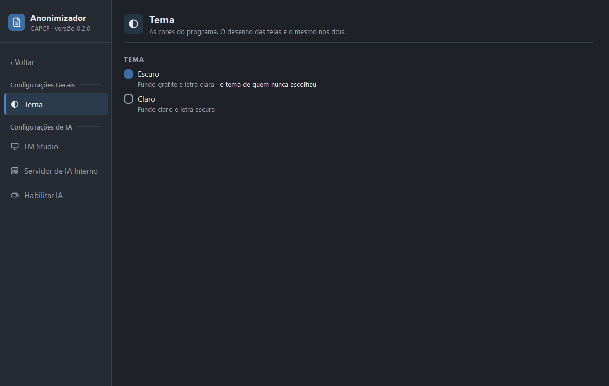
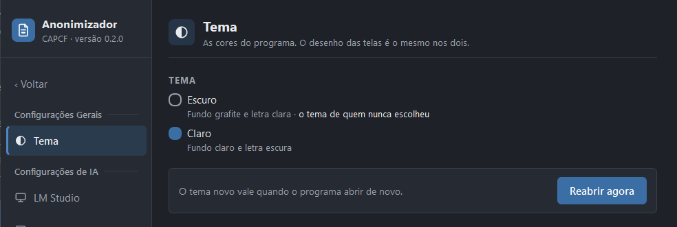
Vem desligada, e só existe no Anonimizar. Ligada em Habilitar IA, aparece o botão "Revisar com IA" embaixo da lista. O destino é um de dois: o LM Studio na própria máquina (o programa fala com ele pela porta do servidor local, a 1234 de costume) ou o Servidor de IA Interno da universidade, com o endereço e o token digitados por quem usa. A IA vê só o texto, com os CPFs inteiros, e responde onde vale olhar; os apontamentos somam à lista, em lilás, e quem mascara é o programa. Baixar o modelo, carregá-lo e ligar o servidor ficam no próprio LM Studio.
A IA local também pode ser motor de leitura, atrás de uma chave e com ressalva: na época da construção, os modelos locais liam bem pior que o PaddleOCR e o Tesseract. Lendo, a página vai como imagem, com os CPFs inteiros, e a conferência continua obrigatória.
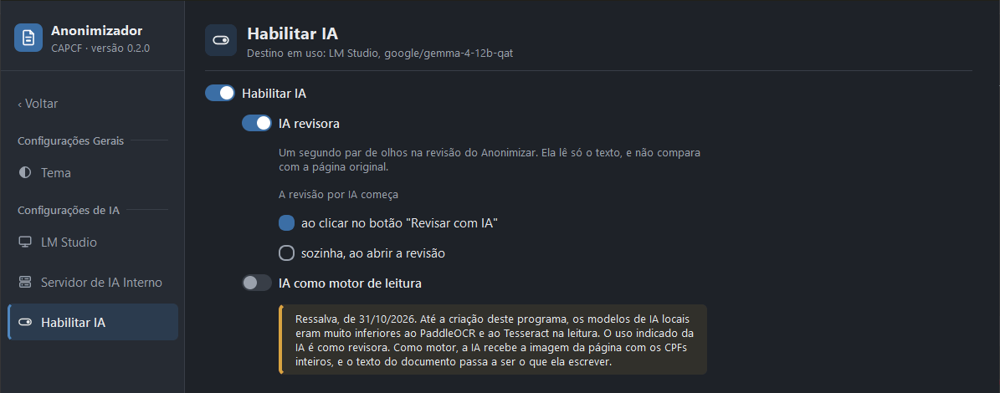
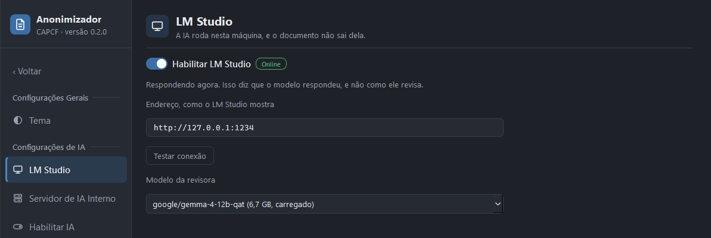
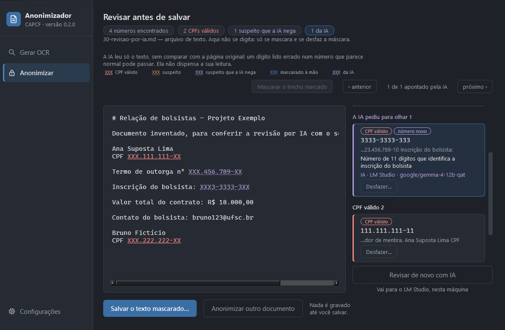
Faltando só um dos dois, a falta aparece na linha dele, e o outro lê. Faltando os dois, um aviso no alto do painel explica o que fazer, e o PDF que só se lê com motor leva a uma tela cheia em vez da leitura. O documento com camada de texto continua funcionando.
| Botão | O que faz |
|---|---|
| Instalar agora | Abre o instalador do Tesseract que vai na pasta instaladores, ao lado do programa. Sem ele lá, o botão fica apagado. |
| Conferir de novo | Procura outra vez, para quando a TI terminar a instalação com o programa aberto. |
| Apontar a pasta | A pessoa diz onde o Tesseract está. Vale só até fechar o programa; para valer sempre, a TI grava a pasta no TESSERACT_CAMINHO do .env. |
O PaddleOCR faltando quer dizer instalação estragada, porque os modelos vão dentro do programa: a linha dele diz para reinstalar.
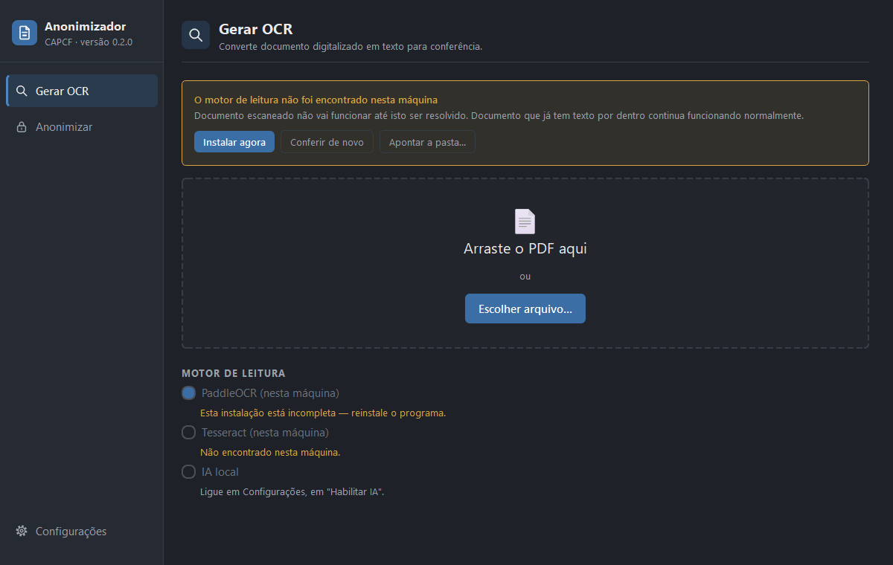
Todas construídas. O especificacoes/backlog.md
tem a situação de cada uma; a regra está na spec, o desenho no rascunho, e o
resultado conferido na página de conferencias/.
| # | Funcionalidade | Onde está o combinado | Telas | Versão |
|---|---|---|---|---|
| 1 | Interface da janela | spec 001 | janela/01 | 0.1.0 |
| 2 | Módulo de OCR | spec 002 | ocr/01 a 10 | 0.1.0 |
| 3 | Anonimizador de CPF | spec 003 · conferência 01 | anonimizar/01 a 08 | 0.1.0 |
| 4 | Revisão por IA local | spec 004 · conferência 06 | ia/01, anonimizar/11 | 0.2.0 |
| 5 | Abrir documento do Word | spec 003, décima emenda · conferência 04 | anonimizar/10 | 0.2.0 |
| 6 | CPF sem o zero da frente | spec 003, nona emenda · conferência 03 | anonimizar/09 | 0.2.0 |
| 7 | Ler com o PaddleOCR | spec 002, emenda de 18/10/2026 · conferência 02 | ocr/11 | 0.2.0 |
| 8 | Lembrar as escolhas de quem usa | specs 002 e 001, emendas de 28/10/2026 · conferência 05 | sem tela nova | 0.2.0 |
| 9 | Ajustes de design do menu | spec 001, emenda de 03/11/2026 · conferência 08 | janela/02 a 05 | 0.2.0 |
| 10 | Tema claro e menu Configurações | spec 001, emenda de 05/11/2026 · conferência 07 | janela/06 a 09 | 0.2.0 |
Os rascunhos estão em mockups/, na pasta de cada área, e cada
spec tem a sua versão ilustrada em mockups/specs/, com os fluxos
e os estados desenhados.